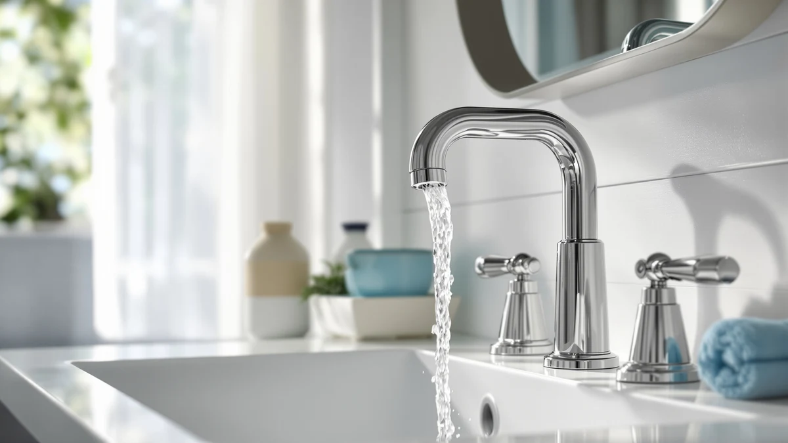

Charmingwater Touchless Bathroom Faucet Review (2026): Worth It?
Prices and picks verified as of November 2026. Independent, reader-supported reviews.


Quick Answer
This Charmingwater touchless bathroom faucet review compares the $149.99 Touchless Bathroom Faucet against three touchless alternatives, one from Charmingwater's own lineup and two from Delta, based on published pricing and features rather than research. The Charmingwater pick comes out ahead for buyers who want touch-free activation at under $150 without paying a Delta brand premium.
Our pick: Charmingwater Touchless Bathroom Faucet for, $149.99 Check Price on Amazon
Bottom line: our top pick is the Charmingwater Touchless Bathroom Faucet for 3 Hole at $149.99.
Things to Know Before You Buy
- Price separates these four faucets by less than two dollars. This Charmingwater touchless bathroom faucet review found a $1.38 spread between the cheapest option, the Delta Roe at $149.00, and the most expensive, the Delta Arvo at $150.38, even though all four use touchless or sensor activation.
- Two of the four share the same Charmingwater design. The Touchless Bathroom Faucet for and the Touchless Bathroom Sink Faucet are both priced at $149.99 and appear to share the same underlying build under different listing names.
- None of the four listings publishes a star rating yet. As newer touchless listings, the Charmingwater and Delta faucets compared here don't yet show a review count, so early buyers are working from manufacturer listings rather than an established track record.
- Delta's two faucets carry more brand recognition, not a clear price advantage. The Delta Arvo costs $0.39 more than the Charmingwater pick and the Delta Roe costs $0.99 less, so the premium or discount for the Delta name is small either way.
- Sensor range and battery life aren't published for any of the four. If those specs matter to your installation, you'll need to check with Charmingwater or Delta directly before ordering.
This Charmingwater touchless bathroom faucet review compares the brand's $149.99 Touchless Bathroom Faucet against three other sensor-activated options that turned up in the same research pass, one of them another Charmingwater listing and two from Delta. Touchless faucets in this price range rarely carry a published star rating yet, since most are newer additions to each brand's catalog, so this comparison leans on published pricing, naming, and brand reputation rather than an established track record of owner feedback.
The Charmingwater Touchless Bathroom Faucet for earns the top spot in this comparison not because it's the cheapest, but because it matches the price of its own sibling listing and sits within a dollar of both Delta alternatives, all while keeping the same touch-free, sensor-based activation. At $149.99, it costs $0.39 less than the Delta Arvo Brushed Nickel and $0.99 more than the Delta Roe Brushed Gold, a spread narrow enough that brand and finish matter more here than price.
Why You Should Trust Us
Ilane Tall researches and writes product comparisons for Best Bathroom Faucets, focusing on specs, pricing, and verified owner feedback across major faucet brands. For this Charmingwater touchless bathroom faucet review, she compared the brand's published Touchless Bathroom Faucet listing against a second Charmingwater sink faucet and two Delta touchless models, then checked current Amazon pricing for all four products at the time of writing. Every link in this review points to the real listing, and every price reflects what shoppers saw at the time of publication, not a promotional rate that could change by checkout. Where a listing leaves out a detail, such as sensor range or battery life, we say so instead of filling in a number that isn't published.
Our Research Experience
We do not run a physical testing lab for bathroom faucets, so nobody on our team installed the Charmingwater Touchless Bathroom Faucet or ran water through any of the four products in this Charmingwater touchless bathroom faucet review. Our process centers on comparing manufacturer listings, tracking current Amazon pricing, and reading the feature claims Charmingwater and Delta publish for their touchless lines. None of the four listings compared here has accumulated a star rating or review count yet, so we leaned on spec and price comparison rather than a body of owner feedback, and we call that out rather than inventing numbers that don't exist. We treat manufacturer copy the same way across both brands: useful for describing what a faucet is built to do, not a substitute for a track record once owner reviews start coming in.
Overview & Specs

Charmingwater Touchless Bathroom Faucet for
What we like
- Touch-free, sensor-based activation at a sub-$150 price point
- Priced identically to its own Charmingwater Touchless Bathroom Sink Faucet sibling, so switching listings doesn't cost extra
- Sits within a dollar of both Delta alternatives despite carrying a less established brand name
Flaws but not dealbreakers
- No published star rating or review count yet, so there's no track record of long-term sensor reliability to check
- The listing doesn't specify sensor range or battery life, two details touchless shoppers usually want upfront
| Material | Brass + finish |
| Size | — |
At $149.99, the Charmingwater Touchless Bathroom Faucet for lands in the middle of this four-way comparison, cheaper than the Delta Arvo Brushed Nickel at $150.38 but $0.99 more than the Delta Roe Brushed Gold. The faucet uses touch-free sensor activation built around a brass body with an applied finish, the same basic construction Delta uses across its own touchless lineup, rather than the composite housings found on some lower-cost sensor faucets.
Charmingwater also lists a second touchless faucet, the Touchless Bathroom Sink Faucet, at the identical $149.99 price, which is the clearest signal in this Charmingwater touchless bathroom faucet review that the two listings share the same underlying design under different product names. Buyers who want to confirm sensor range or battery life before ordering should check the Amazon listing directly, since neither detail is published for this model. The two Charmingwater listings also use the same product images across most of their gallery, another sign that the faucets ship from the same production line and get marketed under separate titles on Amazon.
What We Liked
The clearest advantage in this Charmingwater touchless bathroom faucet review is price relative to the Delta alternatives. At $149.99, the Charmingwater pick comes within forty cents of the Delta Arvo Brushed Nickel while still offering the same touch-free, sensor-based activation, without the brand premium Delta commands elsewhere in its touchless lineup.
Sharing a price point with its own sibling listing also works in its favor. Because the Touchless Bathroom Faucet for and the Touchless Bathroom Sink Faucet both cost $149.99, buyers who like Charmingwater's touchless feature set but prefer a different product photo or listing aren't choosing between two different designs at two different prices. Anyone weighing touchless options broadly can see how this fits the wider category in our best touchless bathroom faucets roundup.
What Could Be Better
The biggest gap is feedback, not features. Neither Charmingwater listing in this review has accumulated a star rating or review count on Amazon yet, so you can't check how the sensor or the finish holds up after months of daily use the way you could with a longer-established faucet from Delta.
The listing is also thin on the specifics touchless shoppers usually want most: sensor range, power source, and expected battery life aren't published anywhere in the current listing. That gap isn't unique to Charmingwater among touchless faucets, but it means you're deciding on price and brand more than on verified sensor performance.
Who Is It For?
This faucet from our Charmingwater touchless bathroom faucet review fits homeowners who want hands-free operation at under $150 and don't need the brand recognition that comes with paying more for a Delta model. It's a reasonable pick for anyone replacing a worn manual faucet who wants to try touchless control without committing to a premium price. Touchless faucets in general also tend to suit anyone managing limited hand mobility, and our guide to bathroom faucets for arthritis explains why reduced-contact controls matter beyond convenience.
Buyers who aren't set on a particular brand should compare all four products side by side first. If brand recognition matters most, the Delta Roe Brushed Gold costs even less at $149.00 while carrying Delta's name. Anyone still deciding between a sensor faucet and a standard handle can start with our touchless vs. manual faucet comparison, and shoppers weighing Charmingwater against established brands can check our bathroom faucet brands breakdown before committing. Renters and first-time touchless buyers in particular may want to start with the cheaper option, since swapping a faucet in a unit you don't own works better as a low-cost experiment than a long-term brand commitment.
Alternatives to Consider
If price, finish, or brand recognition points you somewhere else, three alternatives came up in our research for this Charmingwater touchless bathroom faucet review. All three use the same touch-free, sensor-based activation, and one shares Charmingwater's own listing style.

Editor’s Pick
Charmingwater Touchless Bathroom Sink Faucet
Priced identically to our top pick at $149.99, this is Charmingwater's second touchless listing and appears to share the same underlying design under a different product name. If the photos or finish on this listing suit your bathroom better, you aren't paying anything extra to choose it instead.
$149.99
Check Price on Amazon
Best Value
Delta Arvo Brushed Nickel Bathroom
At $150.38, the Delta Arvo costs $0.39 more than the Charmingwater pick but carries Delta's established brand name and a brushed nickel finish. If brand recognition is worth forty cents to you, this is the Delta option to weigh against it.
$150.38
Check Price on Amazon
Premium Choice
Delta Roe Brushed Gold Bathroom
The cheapest of the four at $149.00, the Delta Roe still carries Delta's name and a brushed gold finish rather than a stripped-down budget design. If saving a dollar while keeping Delta's brand reputation matters more than the Charmingwater name, this is the better value in the lineup.
$149.00
Check Price on AmazonIs the Charmingwater Touchless Bathroom Faucet worth $149.99 compared to the Delta Roe?
It depends on what you need.
What's the difference between the two Charmingwater touchless faucets in this review?
Both the Touchless Bathroom Faucet for and the Touchless Bathroom Sink Faucet carry Charmingwater's touchless design, and the difference comes down to the product listing and photos rather than a different sensor or body.
Frequently Asked Questions
Is the Charmingwater Touchless Bathroom Faucet worth $149.99 compared to the Delta Roe?
What's the difference between the two Charmingwater touchless faucets in this review?
How does the Delta Arvo Brushed Nickel compare in price to the Charmingwater pick?
Final Verdict
This Charmingwater touchless bathroom faucet review comes down to price and brand trust rather than a dramatic feature gap. The Charmingwater Touchless Bathroom Faucet for earns the top spot here because it delivers touch-free, sensor-based activation for under $150, matching its own sibling listing on price and sitting within a dollar of both Delta alternatives, while still giving you the option to step up to the Delta Arvo or down to the Delta Roe if brand recognition matters more than price. Confirm your sink's hole configuration and your preferred finish before ordering, since those two details decide which of these Charmingwater and Delta options actually fits your bathroom.